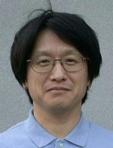
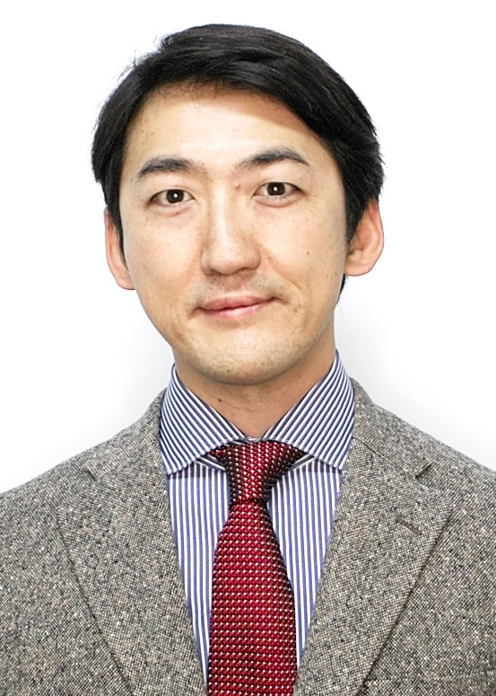

| トップ ページ |
研究 テーマ |
研究 報告 |
研究 スタッフ |
研究 設備 |
研究室の 所在地 |
|---|
| 教育・研究 理念 |
産学連携 のご案内 |
学生の 募集 |
講義に関 する情報 |
研究関連 リンク |
用語解説 |
|---|
|
 |
学位：京都大学博士（工学） 職歴：京都工芸繊維大学（教務職員，助手，助教授，教授） 講義：「計測基礎学」，「光・画像計測論」，「機械工学実験」 技術シーズ 〒606-8585 京都市左京区松ヶ崎御所海道町 京都工芸繊維大学 機械工学系 FAX : 075-724-7300 E-mail:muratakit.ac.jp |
|
 |
学位：大阪大学博士（工学） 職歴：京セラ株式会社，特別研究員（DC2），京都工芸繊維大学（助教，准教授） 講義：「工業計測法」，「先端工業計測論」，「機械工学実験」，「機械加工実習」，「ものづくり加工実習」 技術シーズ 〒606-8585 京都市左京区松ヶ崎御所海道町 京都工芸繊維大学 機械工学系 FAX : 075-724-7300 E-mail:tyohsukekit.ac.jp CV |
| 年度 | 進学 | 就職 |
|---|---|---|
| 2021 | コマツ，日本写真印刷，ニチコン，日東電工，ローム | |
| 2020 | 本学大学院（設計工学専攻：計測研 1） | 旭化成，村田機械，LIXIL，SMC |
| 2019 | 住友電気工業，三菱電機，村田機械 | |
| 2018 | オムロン，シャープ，ニチコン，ダイハツ工業，豊田自動織機 | |
| 2017 | オークマ，住友電気工業，住友電装，三菱電機 | |
| 2016 | 本学大学院（設計工学専攻：計測研 1(社会人)） | 住友精密，三菱電機 (2) |
| 2015 | 椿本チエイン，三菱電機 | |
| 2014 | キヤノン，住友電気工業 (2)，富士ゼロックス | |
| 2013 | 近江度量衡，堀場製作所，ジーエス・ユアサコーポレーション，三菱樹脂 | |
| 2012 | クボタ，サンコール，デンソーテクノ，豊和工業 | |
| 2011 | 高槻市役所 | |
| 2010 | ケイミュー，富士ゼロックス，三菱電機 | |
| 2009 | パナソニック，富士通フロンテック | |
| 2008 | オムロン，キヤノン，コベルコ建機，島津製作所，日本写真印刷，日本モレックス |
| 年度 | 進学 | 就職 |
|---|---|---|
| 2021 | 本学大学院 (機械設計 9（推薦：3、I期：6）：計測研 9) | |
| 2020 | 本学大学院 (機械設計 7（推薦：6、I期：1）：計測研 7) | |
| 2019 | 本学大学院 (機械設計 5（推薦：5）：計測研 5) | 安田工業 |
| 2018 | 本学大学院 (機械設計 5（推薦：2、I期：3）：計測研 5) | |
| 2017 | 本学大学院 (機械設計 3（推薦：1、I期：2）：計測研 3)，金沢大学法学類（編入） | |
| 2016 | 本学大学院 (機械設計 5：計測研 4（推薦：2、I期：2） + 大阪府立大学工業高等専門学校 1（I期）, 機械物理 1：計算研 1（I期）) | 東拓工業 |
| 2015 | 本学大学院 (機械設計 4（I期：4）：計測研 3 + 徳山工業高等専門学校 1) | 日立造船 |
| 2014 | 本学大学院 (機械設計 2)，大阪大学大学院，京都大学大学院 | 今治造船，日本発条 |
| 2013 | 本学大学院 (機械工学 2)，東京大学大学院，奈良先端大学大学院 | ヤマハ発動機 |
| 2012 | 本学大学院 (機械工学 4：計測研 4) | 新潟原動機， 日本コンベア |
| 2011 | 本学大学院 (機械工学 4：計測研 3 + 防振研 1) | 新日本工機 |
| 2010 | 本学大学院 (機械工学 4：計測研 3 + 大阪府立工業高等専門学校 1，先端ファイブロ 1)，奈良先端大学大学院 | 京セラ，三菱電機 |
| 2009 | 本学大学院 (機械工学 1：計測研 1，先端ファイブロ 1)，京都大学大学院，九州工業大学大学院 | 小松ウオール工業 |
| 2008 | 本学大学院 (機械工学 2：計測研 2)，東京大学大学院 | スズキ，ニチコン |